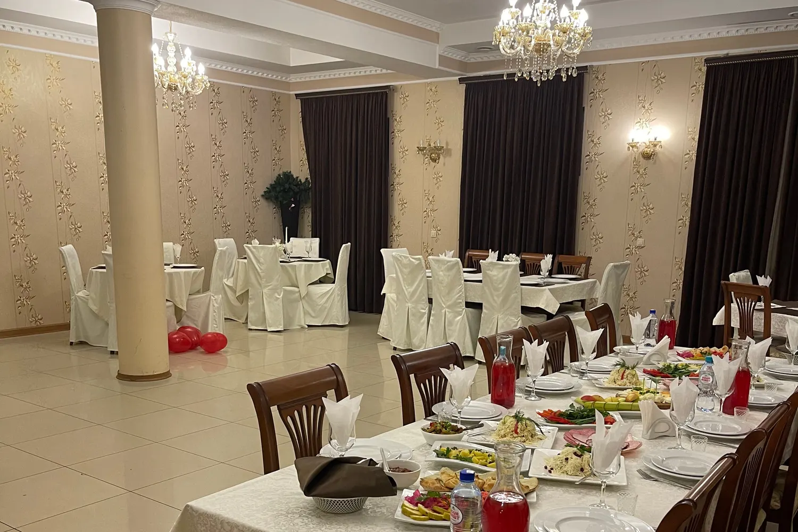
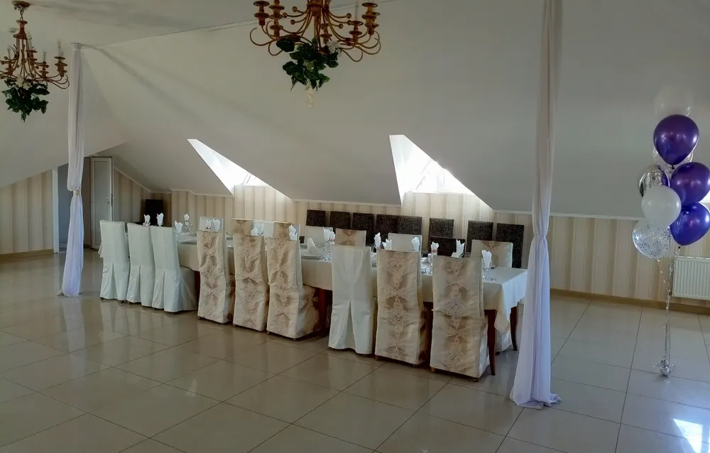
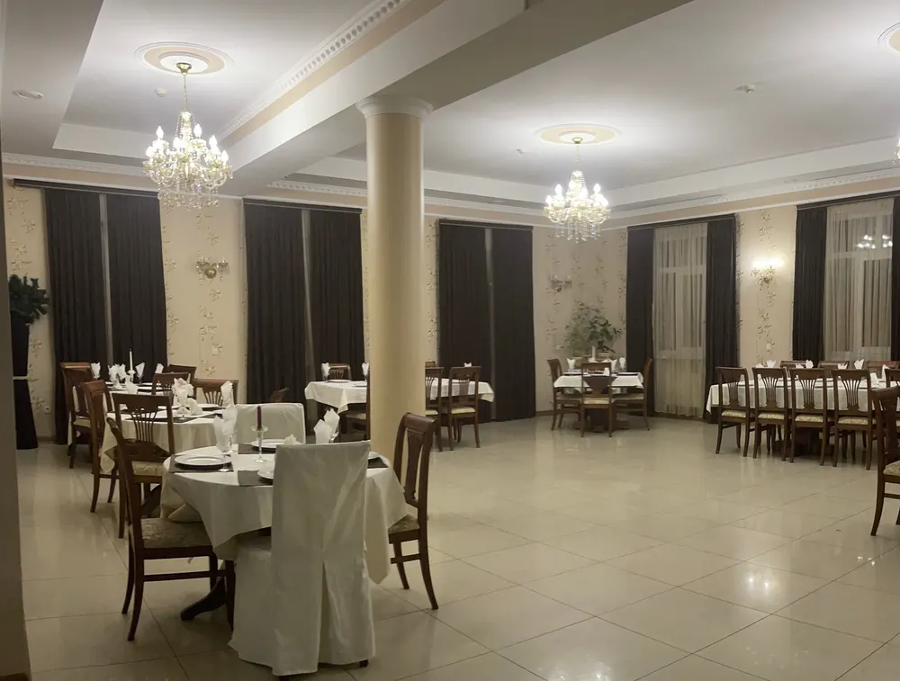
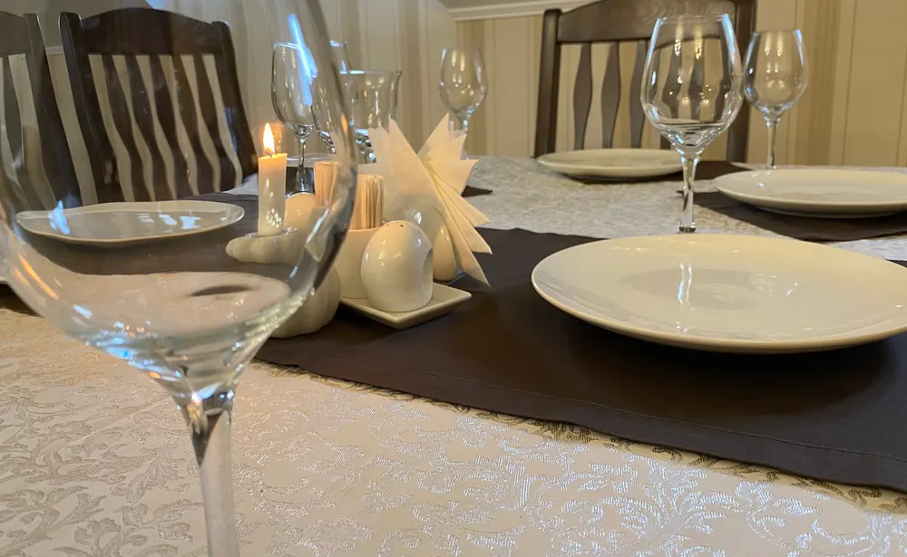

Ресторан с банкетными залами в центре
Банкетные залы в центре Краснодара для любого повода
Свадьбы, юбилеи, корпоративы и семейные ужины. Выберите повод, дату и время, потом позвоните и назовите их.
- Несколько залов: со сводом и с колоннами
- Большое место под танцпол
- Парковка и центр города

Сколько стоит банкет
На карточке указан средний счёт. Банкетное меню и стоимость назовут по телефону.
Банкет
- Банкетное менюпо запросу
- Средний счёт на человекапо карточке на Картах1 000–2 500 ₽
Сумма зависит от зала, числа гостей и меню.
Как забронировать
- 01
Выбираете повод и дату
Форма выше: повод, день и время начала.
- 02
Звоните по номеру
Назовите повод, день и время из формы.
- 03
Выбираете зал
На карточке есть залы со сводом и с колоннами.
- 04
Дата закрепляется за вами
Бронь подтверждают по телефону.



Что видно по отзывам
Большой зал под танцпол
Гости пишут, что места под танцпол хватило, и повеселились от души.
Хорошо накрывают стол
Отмечают, что стол накрыли отлично, а кухня свежая.
Большие порции
В отзывах хвалят вкусные блюда и большие порции.
Центр города
Ресторан в центре, парковка отмечена на карточке.
Отзывы с Яндекс.Карт
«Ходим уже не первый раз отличный ресторан в центре города, вкусные блюда, большие порции, вежливый отзывчивый персонал»
Данил Павлуша · 29 декабря 2025
«Праздновали мероприятие, и не смотря на кардинально различающиеся отзывы, не пожалели, что выбрали это место. Отлично накрыли стол, кухня отличная, свежая. Большое место под танцпол, удалось от души повеселиться!»
Александр Очкась · 12 ноября 2025
«Впервые в этом ресторане, понравилась уютная обстановка, музыка, приятная атмосфера, блюда очень вкусные. Рекомендуем это заведение. Персонал вежливый внимательный. Есть бонусы. Рекомендую🔥»
ХХХ ХХХ · 19 декабря 2025
Отзывы с карточки на Яндекс.Картах, без правок.
Частые вопросы
Какие залы есть?
На фото зал со скошенным потолком и зал с колоннами. Какой свободен, скажут по телефону.
Сколько стоит банкет?
Средний счёт по карточке 1 000–2 500 ₽. Меню и сумму называют по телефону.
Какие поводы?
На карточке: свадьба, банкет, корпоратив, день рождения, поминки и семейный ужин.
Как забронировать?
Выберите дату в форме и позвоните: на карточке указан только телефон.
Выберите зал и дату
- Адрес
- Центральный внутригородской округ, микрорайон Центральный, улица Будённого, 64, Краснодар
- Часы
- график работы – на карточке Яндекс.Карт
- Телефон
- +7 (928) 263-15-96